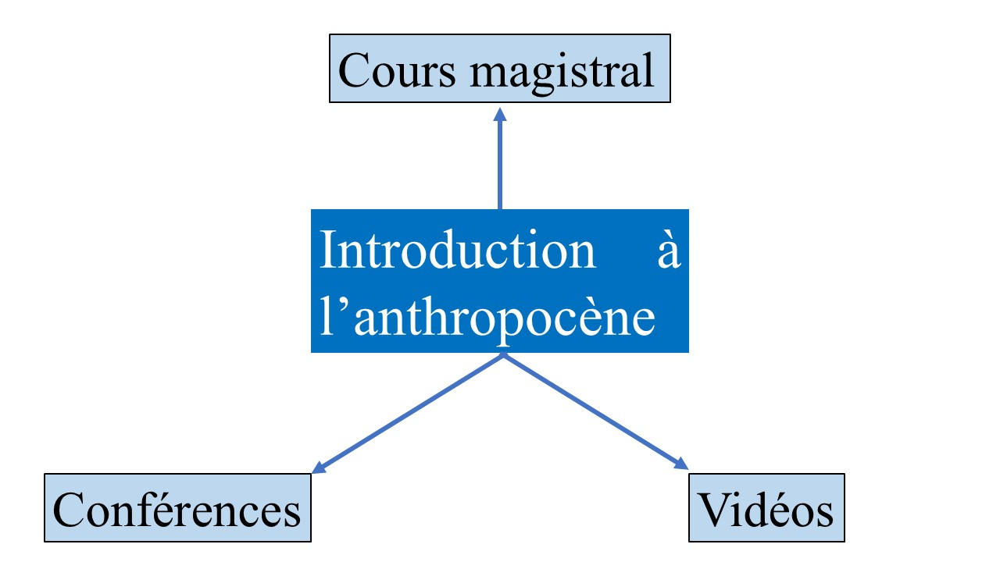
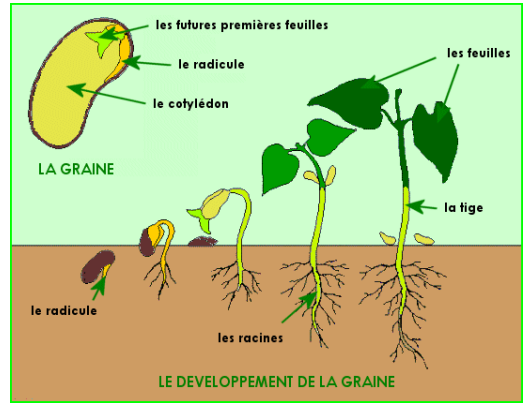
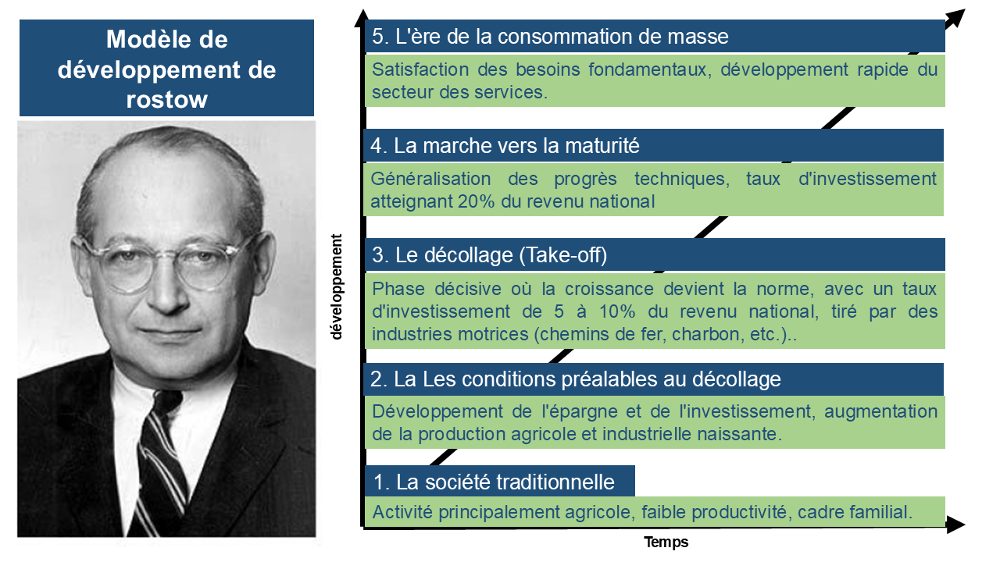

8 Introduction à l’anthropocène
Le cours s’appuie sur trois supports : le cours magistral, des conférences et des séries de vidéos. Les deux derniers éclairent les trois chapitres.

Les trois chapitres portent sur :
- La notion de développement durable
- Les enjeux climatiques
- L’anthropocène
À l’issue du cours, l’étudiant devrait :
maîtriser les notions et outils clés (développement durable, soutenabilité, anthropocène, inertie, incertitude, irréversibilité, économie circulaire, permis d’émission…) ;
avoir développé une posture critique et réflexive sur le passage du développement durable à l’anthropocène. La critique, ici, « ne consiste pas à dire que les choses ne sont pas bien comme elles sont [mais] à voir sur quels types d’évidences, de familiarités, de modes de pensée acquis et non réfléchis reposent les pratiques que l’on accepte » (Foucault, 1994). La réflexivité, elle, consiste à prendre conscience de son propre point de vue, à l’expliciter et à le soumettre à l’analyse.
8.1 Chapitre 1 : La notion de développement durable
Ce chapitre se concentre sur la notion de développement durable, ses origines, ses ambiguïtés et ses implications politiques. L’enseignant, présente le développement durable non comme un concept scientifique pur, mais comme un concept hybride, mêlant connaissances, normes éthiques et visions du monde.
8.1.1 La notion de développement et sa critique
8.1.1.1 L’origine du concept et la théorie de Rostow
La notion de “développement” trouve son origine dans la biologie, où elle désigne l’accomplissement et la réalisation d’un être naturel.

Transposée à l’économie dans les années 1930, elle a été conceptualisée comme un processus de croissance économique dont il fallait identifier les lois.
La théorie la plus influente fut celle de Walt Rostow, qui a décrit le développement comme un processus historique linéaire et irréversible en cinq étapes nécessaires :

Cette vision, centrée sur l’industrialisation et l’innovation technologique, a profondément marqué les politiques post-seconde guerre mondiale, notamment dans le contexte de la décolonisation et de la Guerre Froide, où le modèle capitaliste occidental était promu face au modèle soviétique.
8.1.1.2 Le modèle classique et ses limites
Le modèle de développement classique, formalisé par le discours du président américain Harry Truman en 1949, repose sur plusieurs postulats :
- Un indicateur universel : le Produit Intérieur Brut (PIB).
- Des politiques basées sur la croissance du PIB.
- La maximisation de l’intérêt individuel qui, via la “main invisible” du marché, mène à l’intérêt collectif.
- La disponibilité supposée illimitée des ressources naturelles.
Ce modèle a fait l’objet de critiques fondamentales dès les années 1970 :
Limitation des ressources naturelles : elles ne sont pas infinies.
Dégradation de l’environnement : les impacts des activités humaines (changements climatiques, perte de biodiversité) affectent les générations futures.
Pertinence du PIB remise en cause : ◦ Il ne comptabilise que les activités monétaires, ignorant le travail bénévole ou domestique. ◦ La réparation des dommages (ex: accidents) fait augmenter le PIB, tandis que la prévention le réduit. ◦ Il n’encourage pas l’efficacité ou la réduction du gaspillage et ne mesure pas la richesse sociale ou culturelle.
Répartition inéquitable des revenus : Plus d’un milliard de personnes vivent avec moins d’un dollar par jour, et les risques pèsent davantage sur les plus pauvres.
8.1.2 L’Émergence du Développement Durable
8.1.2.1 Un changement de perspective
Ajouter l’adjectif “durable” au développement n’est pas anodin. Cela implique : 1. L’introduction d’un critère exogène : Le développement n’est plus un processus naturel et endogène ; il est désormais jugé à l’aune de sa durabilité.
La reconnaissance du “mal-développement” : Si un développement “non durable” est possible, alors le développement n’est plus automatiquement synonyme de progrès.
Une analyse spatio-temporelle : La durabilité d’une activité s’évalue non seulement “ici et maintenant”, mais aussi dans ses conséquences “ailleurs et plus tard”. L’exemple de l’élevage industriel européen, dépendant des importations massives de soja sud-américain, illustre comment des bénéfices locaux peuvent être liés à des dégradations environnementales (pollution des nappes phréatiques en Europe) et sociales (dérives de pesticides en Argentine) délocalisées.
8.1.2.2 La construction politique du concept
La notion de développement durable s’est construite à travers une série d’étapes politiques et intellectuelles majeures :
| Année | Événement | Contribution clé |
|---|---|---|
| 1972 | Rapport du Club de Rome, “The Limits to Growth” | Première modélisation montrant les limites d’une croissance infinie sur une planète finie. Propose une croissance pour les pays en développement (PVD) et un développement non matériel pour les pays développés. |
| 1972 | Conférence des NU à Stockholm | Slogan “Une seule Terre”. Les PVD affirment que “leur pollution, c’est la pauvreté”. Création du Programme des Nations Unies pour l’Environnement (PNUE). |
| 1973 | Conférence de Cocoyoc (CNUCED/PNUE) | Introduction du concept d’écodéveloppement par Ignacy Sachs : une voie médiane entre décroissance et croissance illimitée, axée sur l’autonomie locale, les besoins primaires et la prudence écologique. |
| 1987 | Rapport Brundtland, “Notre Avenir à Tous” | Fournit la définition canonique du développement durable. Affirme qu’environnement et développement sont un seul et même problème. Met l’accent sur l’équité sociale et les générations futures. |
| 1988 | Premier rapport du GIEC | Institutionnalisation de l’expertise scientifique sur le climat. |
| 1992 | Sommet de la Terre à Rio | Adoption des grandes conventions sur le climat (CCNUCC) et la biodiversité (CDB), ancrant le développement durable dans le droit international. |
| 2015 | COP21 à Paris | Adoption de l’Accord de Paris, un accord universel sur le climat visant à limiter le réchauffement. |
8.1.3 Déconstruction du Développement Durable
8.1.3.1 Les trois piliers et leurs dilemmes
La vision la plus simpliste du développement durable est celle des trois piliers : économique, social et environnemental. Cependant, cette représentation masque des tensions et des dilemmes fondamentaux :
Dilemme de viabilité (Économie / Environnement) : Conflit entre la croissance économique et la préservation de l’environnement. L’exemple du développement de l’intelligence artificielle illustre ce dilemme : sa croissance exponentielle entraîne une consommation massive d’énergie et d’eau pour les data centers, entrant en conflit direct avec les objectifs de décarbonation.
Dilemme d’équité (Économie / Social) : Tensions liées à la répartition des richesses, aux conditions de travail, à la dépendance Nord-Sud et à l’accès aux ressources et technologies.
Dilemme de vivabilité (Environnement / Social) : Conflits liés à l’accès inégal aux ressources, à la justice environnementale (inégalité d’exposition aux pollutions) et à la justice climatique. Une stratégie courante pour les pays riches consiste à délocaliser ces problèmes (industries polluantes, déchets, impacts agricoles) vers les pays du Sud.
8.1.3.2 L’Approche par les ressources vs. les Capacités
La définition du Rapport Brundtland contient une subtilité cruciale qui oppose deux manières de concevoir la durabilité :
- Approche par les ressources (Resource Availability)
- Objectif : évaluer et quantifier les stocks de ressources disponibles.
- Méthode : repose sur des indicateurs, des critères et la prédictibilité. Elle cherche à réduire l’incertitude par la modélisation.
- Débat central : la substituabilité des ressources et l’efficacité de leur usage.
- Exemples : le calcul de l’empreinte écologique, les prévisions sur le “pic pétrolier”, ou l’analyse stratégique des réserves de métaux rares.
- L’Approche par les capacités (Functional Integrity)
- Objectif : évaluer la capacité d’un système à orienter sa trajectoire et à maintenir son intégrité face aux changements.
- Méthode : accepte et intègre la complexité et l’incertitude. Elle se concentre sur la gouvernance, la résilience et les conditions de transformation des systèmes sociaux.
- Débat central : le maintien de l’équilibre versus la nécessité de transformation.
- Exemple : la situation de la République Démocratique du Congo, qui possède d’immenses ressources en cobalt mais n’a pas la capacité de les gérer souverainement en raison d’incertitudes techniques (identification, quantification), sécuritaires et géostratégiques.
8.1.3.3 Soutenabilité faible vs. soutenabilité forte
Ce débat porte sur ce qui doit être préservé pour les générations futures, conceptualisé en termes de “capital total” (K = K produit + K humain + K naturel substituable + K naturel non substituable).
• Soutenabilité Faible : ◦ Principe : Il suffit de conserver le capital total (K). Les différentes formes de capital sont interchangeables. ◦ Logique : Fait le pari de l’innovation technologique, de la substitution et de la compensation (ex: marchés carbone, géo-ingénierie). Une perte de capital naturel peut être compensée par un gain de capital technologique. • Soutenabilité Forte : ◦ Principe : Il faut conserver le capital total (K) ET le capital naturel non substituable (K*n). ◦ Logique : Reconnaît que certains éléments (biodiversité, écosystèmes fonctionnels, savoirs autochtones) sont irremplaçables et critiques. Leur perte ne peut être compensée.
8.2 Chapitre 2 : Les grands enjeux climatiques
8.2.1 Le diagnostic scientifique : un système climatique déstabilisé
Le système climatique terrestre est déstabilisé par les activités humaines. Pour en saisir les conséquences, il faut d’abord comprendre les mécanismes de base du climat et la dynamique des gaz à effet de serre (GES).
8.2.1.1 Les mécanismes du système climatique
Le climat de la Terre est régulé par un équilibre énergétique complexe, dont l’un des piliers est l’effet de serre. Ce phénomène naturel, indispensable à la vie, permet de maintenir une température moyenne modérée à la surface de la planète. Il est assuré par une couche de gaz présents dans l’atmosphère qui retiennent une partie du rayonnement solaire réfléchi par la Terre.
Il est crucial de distinguer deux types de gaz à effet de serre :
Les GES « Naturels » : Ces gaz, comme la vapeur d’eau, sont présents dans l’atmosphère indépendamment de l’activité humaine et participent à l’équilibre climatique historique de la planète.
Les GES « anthropiques » : Ce sont les gaz dont la concentration a massivement augmenté en raison des activités humaines depuis la révolution industrielle. Le dioxyde de carbone (CO₂), le méthane (CH₄) et le protoxyde d’azote (N₂O) en sont les principaux représentants. C’est l’accumulation de ces gaz qui amplifie l’effet de serre naturel et provoque le réchauffement global.
8.2.1.2 La dynamique des gaz à effet de serre (GES)
Le déséquilibre actuel est directement lié à l’injection massive de GES d’origine anthropique dans l’atmosphère, dépassant la capacité d’absorption des puits de carbone naturels que sont les océans et la végétation. Ce surplus entraîne une augmentation continue de la concentration atmosphérique globale du dioxyde de carbone.
Le bilan annuel net des émissions de CO₂, bien que sujet à une marge d’incertitude scientifique, illustre clairement cette dynamique à partir de valeurs centrales estimées :
Sources d’émissions (en GtC - milliards de tonnes de Carbone) :
Émissions liées aux énergies fossiles : 6,3 GtC (valeur centrale)
Émissions liées à la déforestation : 1,55 GtC (valeur centrale)
Absorption par les puits de carbone (en GtC) :
Absorption par les mers : -1,7 GtC (valeur centrale)
Absorption par la végétation : -2,95 GtC (valeur centrale)
Bilan net : Un apport annuel net d’environ 3,2 GtC (valeur centrale) s’accumule dans l’atmosphère.
La répartition des responsabilités dans ces émissions est inégale. En 2016, les principaux pays émetteurs étaient (Note : le bilan global du cycle du carbone est souvent exprimé en GtC, tandis que les inventaires nationaux d’émissions sont comptabilisés en Gt de CO₂) :
Chine : 10 Gt de CO₂
États-Unis : 5,3 Gt de CO₂
Inde : 2,4 Gt de CO₂
Russie : 1,6 Gt de CO₂
Japon : 1,4 Gt de CO₂
Cette répartition inégale nourrit les tensions internationales sur le partage des efforts, un point repris plus loin.
8.2.2 La cascade des impacts : conséquences multiples et interdépendantes
La hausse des concentrations de GES enclenche une chaîne d’impacts interdépendants, qui touchent en cascade les milieux naturels et les sociétés. Certains sont irréversibles à l’échelle humaine, ce qui oblige à « gouverner l’irréversible ».
8.2.2.1 Les impacts physiques directs du réchauffement
À la base de cette cascade de conséquences, on trouve trois modifications physiques primaires du système terrestre :
Augmentation de la température : Ce phénomène est observable à l’échelle globale et locale. À Bruxelles-Uccle, par exemple, la température moyenne annuelle a augmenté de 2,0 °C par rapport à la période 1833-1910. L’année 2014 y a été la plus chaude, record battu depuis à plusieurs reprises (2018, 2019) : les années les plus chaudes se concentrent quasi exclusivement sur les trois dernières décennies.
Modification des régimes de précipitations : Le réchauffement altère le cycle de l’eau, entraînant des changements dans la fréquence, l’intensité et la répartition des pluies.
Accroissement du niveau de la mer : Conséquence directe de la fonte des glaces et de la dilatation thermique des océans, cette hausse menace directement les zones littorales.
8.2.2.2 Les impacts sur les milieux naturels et les écosystèmes
Ces changements physiques primaires se traduisent par des pressions sévères sur les écosystèmes.
Impacts sur les zones costières
Érosion des plages
Inondation des zones costières
Coûts supplémentaires pour protéger les communautés
Impacts sur les espèces et zones naturelles
- Disparition d’espèces et d’écosystèmes
Impacts sur les forêts
Modification de la composition des forêts
Changement de l’étendue géographique des forêts
Altération de la santé et de la productivité des forêts
8.2.2.3 Les impacts sur les systèmes humains
Les sociétés humaines, dont les activités et la santé dépendent étroitement de la stabilité environnementale, sont profondément affectées.
Impacts sur l’agriculture
Modification du rendement des récoltes
Augmentation des besoins d’irrigation
Impacts sur les ressources en eau
Problèmes d’alimentation en eau
Dégradation de la qualité de l’eau
Impacts sanitaires Ces impacts sanitaires, qui peuvent être directs (liés à la chaleur) ou indirects (maladies vectorielles, qualité de l’air), incluent :
Augmentation de la mortalité liée au climat
Risques d’épidémies infectieuses (ex: paludisme)
Augmentation des maladies liées à la qualité de l’air
8.2.3 l’urgence temporelle : inertie, irréversibilité et points de rupture
Le temps complique tout dans la crise climatique. Inertie, irréversibilité et seuils de rupture (« tipping points ») font que nos actions, ou nos inactions, produiront des effets durables avec un fort décalage. D’où la nécessité de réponses structurées : atténuation et adaptation.
8.2.3.1 L’inertie du système et l’irréversibilité du changement
L’inertie climatique se réfère au décalage temporel qui existe entre les émissions de GES et leurs pleins effets sur la température. On estime ce décalage à environ 40 ans.
Ce phénomène a une conséquence politique majeure : il existe un décalage inévitable entre les efforts politiques mis en œuvre aujourd’hui (par exemple, la réduction des émissions) et l’observation de résultats tangibles sur le climat. Cette dynamique rend l’action publique particulièrement difficile, car les bénéfices des politiques actuelles ne seront perçus que par les générations futures. Elle rend également certains aspects du changement climatique déjà enclenchés irréversibles à l’échelle de temps humaine.
8.2.3.2 Les seuils de rupture (Tipping Points) et scénarios d’emballement
Un seuil de rupture est un point critique où une altération, même mineure, peut faire basculer radicalement et de manière irréversible des pans entiers du système climatique et des écosystèmes. Le franchissement de ces seuils peut déclencher des scénarios d’emballement, ou “cascades”, où les effets s’auto-renforcent.
Impacts biophysiques : Le franchissement d’un seuil peut provoquer une cascade d’effets. Par exemple, la fonte du permafrost libère du méthane, un puissant GES, qui accélère à son tour le réchauffement et donc la fonte du permafrost. C’est une boucle de rétroaction positive qui mène à un emballement du système.
Impacts sociaux : Les sociétés humaines obéissent à une logique similaire. Une faible perturbation environnementale (sécheresse prolongée, inondation majeure) peut être le déclencheur de transformations sociales majeures et brutales, telles que la déstabilisation politique interne (montée du populisme, conflits), des crises humanitaires ou des vagues de migration de grande ampleur.
8.2.4 Les réponses sociétales et politiques face à l’urgence climatique
Face au diagnostic scientifique, la communauté internationale a construit, par étapes, des cadres de réponse. Le chemin de la science à la gouvernance mondiale est semé de difficultés, de controverses et d’instruments politiques successifs.
8.2.4.1 Les stratégies conceptuelles : atténuation et adaptation
Trois stratégies principales structurent la réponse au changement climatique :
Atténuation (Mitigation) : Selon la définition du GIEC, l’atténuation correspond à « la mise en œuvre de politiques destinées à réduire les émissions de gaz à effet de serre et à renforcer les puits de carbone ». Elle vise à traiter les causes du problème.
Adaptation : Selon Schipper, cette stratégie « vise les conséquences du changement climatique et tente d’en réduire ou d’en prévenir les impacts sur les systèmes humains et naturels ». Elle vise à gérer les effets inévitables du changement.
Gestion des pertes et préjudices (Loss and Damage) : Cette troisième approche, aussi nommée réparation, concerne la gestion des impacts qui ne peuvent être ni évités par l’atténuation, ni gérés par l’adaptation. Elle vise à répondre aux conséquences irréversibles du changement climatique, en particulier pour les communautés les plus vulnérables.
8.2.4.2 La gouvernance mondiale du climat : acteurs et controverses
Au cœur de la gouvernance climatique se trouve le Groupe d’experts intergouvernemental sur l’évolution du climat (GIEC/IPCC). Créé en 1988 par l’Organisation météorologique mondiale (OMM) et le Programme des Nations unies pour l’environnement (PNUE), il fonctionne comme un “forum mondial hybride”. Son rôle est de synthétiser l’état des connaissances scientifiques pour éclairer les décisions politiques. Son premier rapport en 1990 a servi de base à l’élaboration de la Convention-cadre des Nations unies sur les changements climatiques (CCNUCC), signée au Sommet de la Terre de Rio en 1992.
Le GIEC porte pourtant un paradoxe :
- Le “paradoxe du GIEC” : Sa force réside dans son indépendance scientifique, qui lui confère une légitimité et une crédibilité uniques. Sa faiblesse est sa faible connexion institutionnelle avec les décideurs politiques nationaux, ce qui peut limiter son influence directe sur les politiques publiques.
Le changement climatique est également au centre de nombreuses controverses :
Controverses scientifiques : Elles concernent principalement les débats entre différentes disciplines scientifiques sur les modèles, les données et les interprétations.
Controverses politiques : Elles portent sur la question des gagnants et des perdants, le défi d’agir à une dimension planétaire sans autorité centrale, la gestion de l’incertitude et surtout la question de l’équité sociale dans la répartition des efforts.
Controverses médiatiques : Celles-ci sont alimentées par le rôle des ONG et par des modes de communication très variables entre la science et l’État selon les pays.
8.2.4.3 Les instruments de la politique climatique internationale
Plusieurs accords et protocoles ont jalonné l’histoire de la diplomatie climatique.
Le Protocole de Montréal (1987) : Souvent cité comme un antécédent réussi, cet accord a organisé la disparition progressive des gaz CFC responsables du trou dans la couche d’ozone. Son succès s’explique par le fait qu’il s’agissait d’un problème politiquement et techniquement simple : peu d’entreprises étaient concernées et un substitut technologique a pu être trouvé. Cette simplicité le différencie fondamentalement de l’enjeu climatique, qui engage tous les pays, tous les secteurs et nos modes de vie.
Le Protocole de Kyoto (entré en vigueur en 2005) :
Objectif : Il obligeait 38 pays industrialisés à réduire leurs émissions de GES de 5,2 % en moyenne par rapport aux niveaux de 1990, sur la période 2008-2012. Toutefois, sa portée a été considérablement limitée par le fait que les États-Unis et l’Australie ne l’ont pas ratifié, privant l’accord de deux des plus grands émetteurs de l’époque.
Instruments de flexibilité : Pour atteindre ces objectifs de la manière la plus économiquement efficace possible, le protocole a introduit trois mécanismes :
Marché de droits d’émission (MDE)
Mise en œuvre conjointe (MOC)
Mécanisme de développement propre (MDP)
La Conférence de Paris (COP 21, 2015) : Cet accord marque un tournant dans la politique climatique mondiale et constitue un sujet d’examen potentiel clé.
8.2.5 Analyse des thématiques
Deux thèmes transversaux, souvent à l’examen, méritent qu’on s’y arrête : le marché du droit à polluer et les implications politiques du réchauffement.
8.2.5.1 Le marché du droit à polluer : mécanisme et enjeux
Le marché des droits d’émission (MDE), l’un des instruments de flexibilité de Kyoto, repose sur un principe économique simple : favoriser les réductions d’émissions là où elles sont les moins coûteuses.
Principe de fonctionnement :
Une autorité publique fixe un plafond global d’émissions pour un secteur donné et distribue des “permis d’émission” aux entreprises, chaque permis correspondant à une tonne de CO₂.
Les entreprises qui peuvent réduire leurs émissions à un coût inférieur au prix du marché des permis ont intérêt à le faire et à vendre leurs permis excédentaires.
Les entreprises pour qui la réduction est très coûteuse ont intérêt à acheter des permis sur le marché plutôt qu’à investir.
Exemple : L’entreprise A (technologie moderne) doit dépenser 200 pour réduire une tonne de CO₂, tandis que l’entreprise B (vieille technologie) ne dépense que 100. Si B réduit plus que son quota et vend ses permis excédentaires à A, le coût total de la réduction pour la collectivité sera plus faible. Le résultat écologique est le même, mais il est atteint de manière économiquement plus efficace, générant un bénéfice collectif.
Conditions et difficultés :
Nécessité de créer un territoire délimité (“bulle”) où les échanges sont possibles.
Exigence d’un inventaire précis et fiable des émissions.
Applicabilité limitée aux secteurs où les acteurs sont concentrés (ex: industrie lourde), ce qui défavorise les secteurs diffus comme les transports ou les services.
8.2.5.2 Les implications politiques du réchauffement climatique
La question centrale de la politique climatique est celle de la répartition équitable des efforts entre les pays. C’est un enjeu à la fois politique et éthique, pour lequel plusieurs critères ont été envisagés.
Critère de la population :
Principe : Chaque habitant de la planète a un droit d’émission égal.
Analyse critique : Bien qu’égalitaire en théorie, ce critère est jugé irréaliste en pratique. Il imposerait une charge financière écrasante aux pays industrialisés, les décourageant de participer au système, tout en créant des rentes massives pour des pays très peuplés et peu développés.
Critère du PIB :
Principe : Les droits d’émission sont répartis en fonction du niveau de développement économique, car les émissions sont liées à l’activité économique.
Analyse critique : Ce critère est très inégalitaire. Il pénalise le développement futur des pays en voie de développement (PVD) en leur allouant de faibles quotas, tout en accordant un privilège aux pays déjà développés et gros émetteurs.
Critère des émissions actuelles :
Principe : Ce critère se base sur les “droits acquis” par la tradition et exige des efforts proportionnels de la part de tous.
Analyse critique : C’est une approche jugée plus réaliste et acceptable pour les gros émetteurs. Cependant, pour être équitable, elle doit impérativement être corrigée par des mécanismes de soutien financier et technologique pour les pays à faibles technologies et les PVD, afin de ne pas figer les inégalités de départ.
En conclusion, la combinaison de la complexité scientifique, des impacts systémiques et de ces choix politiques et éthiques fondamentaux fait du changement climatique l’un des défis de gouvernance les plus complexes de notre époque.
8.3 Chapitre 3 : Anthropocène
8.3.1 Film 1
https://www.youtube.com/watch?v=NjrOv80HRx4&list=PLn882S8Y7mzS4R65-WYFNFIvbtJSpg6ke&index=7
L’HOMME A MANGÉ LA TERRE. Regardez le film à partir de 44’10” : la seconde guerre va finalement permettre un paroxisme humain …. ” (durée 54’) Un film qui nous raconte l’Histoire qui a poussé les êtres humains vers l’exploitation des ressources et des énergies fossiles, l’agriculture industrielle, l’agro-industrie, mais aussi l’industrie de l’armement et l’industrie automobile. Un voyage dans le temps et dans l’espace qui nous font mieux comprendre comment nous en sommes arrivés là. Un film qui nous permet de réaliser comment une poignée d’industriels ont mis la main sur les choix politiques et combien il est urgent de réformer le système économique et financier . C. Bonnueil & J-B Fressoz (2016) L’événement anthropocène (Ed. Seuil)
8.3.2 Film 2
https://www.youtube.com/watch?v=jtP03S9B740&t=8s
Visionner de 0 à 45’ 25” et de 1h08’ et 1h34’ et répondre aux questions suivantes :
Quels problèmes d’échelles espace/temps pose l’anthropocène en matière de démocratie? Quelles questions en matière de justice sociale ? En quoi l’Etat joue-t-il un rôle crucial ? Le mot « anthropocène » nous apprend que l’homme est capable de modifier son environnement, jusque dans la teneur des couches géologiques de la Terre. Quels sont les responsables de ces changements ? Et quelles seraient les institutions politiques à même de répondre aux défis de cette nouvelle ère ? S’agit-il d’envisager une refonte de la démocratie représentative sous la forme de démocratie horizontale et directe ? De renforcer les ambitions régulatrices de l’Etat ? D’instituer une justice climatique internationale ?
8.3.3 Film 3
https://app.frame.io/presentations/99c16e04-aec6-491f-bae9-432246561ebe
8.3.4 Film 4
Pour aller plus loin : Une écologie décoloniale, entretien avec Malcom Ferdinand Regarder la vidéo Une écologie décoloniale, entretien avec Malcom Ferdinand Durée : 25:24 Utilisateur : n/a - Ajouté : 01/04/20 Avec son ouvrage Une écologie décoloniale, l’ingénieur en environnement et politologue Malcom Ferdinand publie le croisement de ses recherches, entre la philosophie, les théories postcoloniales et l’écologie. Ce livre, tiré de sa thèse, vise à historiciser et rendre intelligible l’écologie décoloniale, mouvement intersectionnel qui (p. 32). Ferdinand n’est pas le premier à pointer la connexion entre ces éléments. Il annonce d’ailleurs s’inscrire dans la lignée de Nathan Hare, Arturo Escobar ou Philippe Descola. Il cite fréquemment Frantz Fanon, Aimé Césaire et Edouard Glissant pour traiter du colonialisme, et Se…
https://www.youtube.com/watch?v=uKKz2yJ29VI
8.3.5 Film 5
https://www.youtube.com/watch?v=hA0QYVeQxFc Capsule résumé : qu’est ce que l’anthropocène ? Il y a aujourd’hui un consensus scientifique sur la dégradation des conditions d’habitabilité de la terre et sur la responsabilité de l’homme. Habitabilité ? que signifie cette étrange expression, La terre ne serait-elle plus habitable ? Cela signifie que la dégradation ne se limite pas à des conditions spécifiques comme une période ou un pays précis, un mode d’habitat ou un type d’activité économique … mais à toutes les possibilités d’habiter et d’exercer des activités et que ceci est de la responsabilité de l’homme. C’est ce que le terme anthropocène désigne d’abord : l’entrée dans une nouvelle ère provoquée par l’impact des activités humaines….